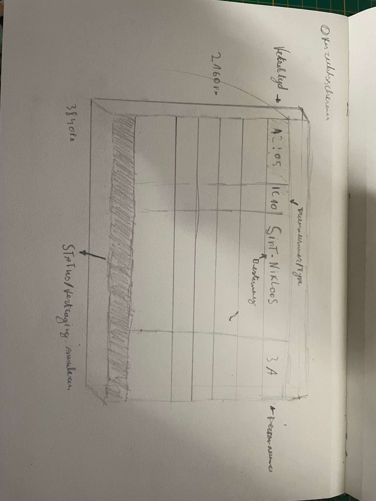
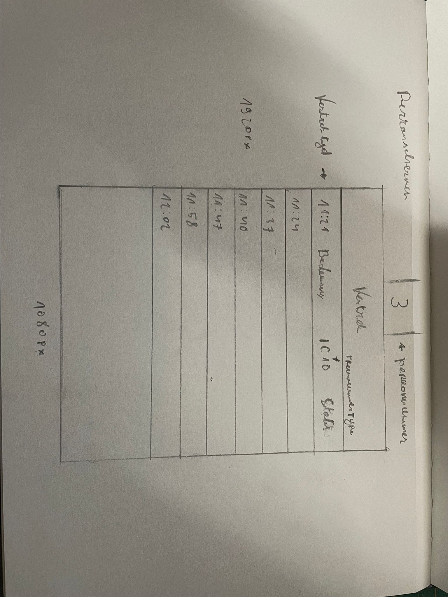
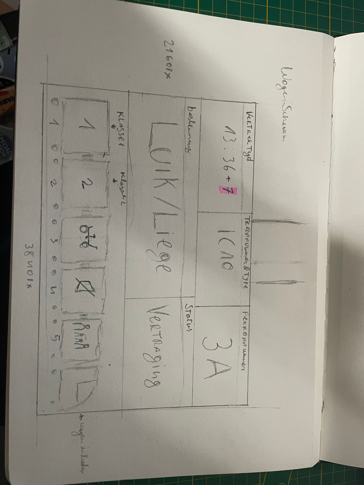

In de eerste week ben ik gestart met het verkennen van mijn idee voor Lost in Tra(i)nslation. Ik heb mijn ideeën eerst heel simpel met potlood uitgewerkt, zonder kleur of detail.
Ik maakte drie soorten schermen:
Bij elke schets schreef ik kort welke informatie waar moest komen, zoals vertrektijd, bestemming, type trein, perronnummer en vertraging. Ik noteerde ook afmetingen in pixels om later makkelijker naar Figma te kunnen overschakelen.
Door eerst op papier te werken kon ik snel aanpassen, schrappen en opnieuw tekenen. Deze schetsen vormden de basis voor mijn digitale schermen in de volgende weken.


